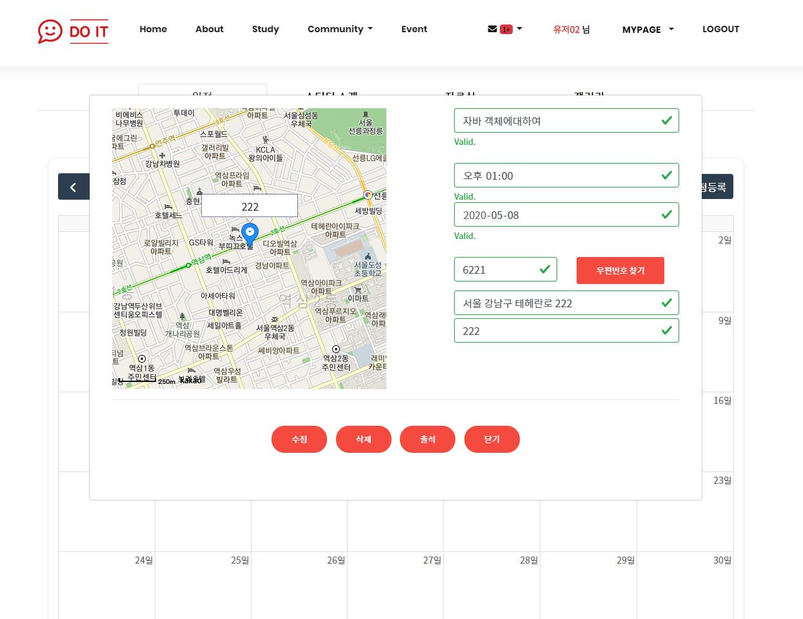

주제 : IT 스터디 이용에 편리함을 주고자 하는 사이트.
<개발환경>
language : JAVA, HTML5, CSS3, JavaScript
Tools : eclipse(STS), Visual Studio Code, sqldeveloper
DBMS : Oracle DB
Server : Apache Tomcat 8.5
Framework : Spring
Spring 프레임워크 기반의 홈페이지로 구성되어 있습니다.
| 프로젝트 메인 화면입니다. 메뉴는 HOME, ABOUT, STUDY, COMMUNITY, EVENT로 되어 있습니다. 그 외 마이페이지, ADMIN 페이지 등으로 구성되어 있습니다. |
| 회원 가입 화면입니다. 기본적인 필수 약관 체크후 넘어갈 수 있습니다. |
회원 가입때 아이디 중복 체크는 ajax를 써서 자동으로 체크합니다. 비밀번호 확인, 이메일은 유효성 검사처리 되어 있습니다. 주소는 다음 주소검색 API를 사용했습니다. |
| 로그인 후 메인화면입니다. 이름 왼쪽에 쪽지 기능이 있고, 새로온 메시지가 있는 것을 확인할 수 있습니다. |
쪽지 기능에서는 자신이 속한 그룹원을 보여줍니다. 키보드 ↓를 누르면 자신이 속한 그룹이 있으면 그룹원을 보여줍니다. 받은쪽지함, 새로온 쪽지함, 보낸 쪽지함, 삭제, 답신이 가능합니다. |
| 스터디 리스트입니다. 제목, 모집중or모집종료, 개설자, 현인원/최대인원, 지역, 보증금입니다. SELECT 검색 기능이 들어 있습니다. |
개설 후 세부 디테일 화면입니다. 스터디 가입, 모집인원 등 세부 내용을 볼 수 있고 참석자들의 프로필사진과 이름이 나오게 만들었습니다. |
| 일정등록을 누르면 보여지는 화면입니다. 일정제목, 날짜, 시간, 모일 장소등을 입력할 수 있고 주소를 입력하면 지도에 나오도록 만들었습니다. |
일정을 등록하면 캘린더에 등록됩니다. |
|  | |
| 일정 디테일 화면입니다. 스터디 개설자일 경우 아래쪽에 수정, 삭제, 출석버튼이 추가됩니다. | 출석 같은 경우는 다음과 같이 각자 그 일정에 출석을 했는지, 하지 않았는지를 체크 후 등록할 수 있습니다. 스터디 개설자가 아닌 경우는 아래쪽 수정 버튼이 보이지 않습니다. |
| 프리미엄 게시판 기능입니다. 마일리지(재화, 돈)를 내고 자료실, 갤러리 기능을 오픈할 수 있습니다. |
자료실과 갤러리 같은 경우는 스터디에 도움이 될 만한 자료를 올리거나 단순 게시글을 올리는 것도 가능합니다. |
| 커뮤니티 메뉴입니다 공지사항, 자유게시판, Book-Share, 질문게시판으로 되어 있습니다. Book-Share같은 경우는 공부하다 안 쓰는 책을 무료나눔하는 용도로 만들었습니다. 질문게시판은 에러나 공부하다 모르는 부분을 질문할 때 쓰는 용도입니다. |
EVENT 페이지입니다. 세미나, 웨비나 등과 같은 정보를 공유하는 페이지입니다. 글은 우선은 관리자만 쓸 수 있도록 만들었습니다. 최근게시물, 검색, 태그 기능을 넣었습니다. |
| 마이페이지입니다. 마일리지, 개인정보수정, 가입한 스터디리스트, 위시리스트 탭으로 구성되었습니다. 마일리지(호두)는 사이트 내 재화와 같은 용도입니다. |
개인정보 수정입니다. 회원가입과 같은 모양이고, 개인 프로필사진을 추가할 수 있습니다. |
| 가입한 스터디 리스트, 위시리스트를 볼 수 있습니다. 자신의 호텔예약 내역을 보여주고, 문의내역도 확인이 가능합니다. |
마일리지 충전은 아임포트API를 사용했습니다. 카카오페이로 충전하는 모습입니다. |
| 마이페이지-마이리스트입니다. 자신이 쓴 글을 확인할 수 있습니다. |
Book-Share에 쓴 글을 확인할 수 있습니다. |
팀장을 맡아서 한 프로젝트
기획부터 화면구현, DB설계, 코드까지 팀원들의 도움이 컸던 것 같다.
세미 때 보다는 좀 더 편하게 프로젝트를 수행할 수 있었던 건 팀원들이 적극적이어서 그랬던 것 같다.
깃허브를 관리하면서 충돌도 많이 나고, 필요한 부분은 손으로도 합치고 하면서 깃에대해 좀 더 이해한 것 같다.
맡았던 파트는 커뮤니티 부분, 이벤트 부분, 그리고 이것저것 헬프를 요청한 팀원들을 도와주었다.
취업준비다 뭐다 하면서 생각보다 많은 부분에 손을 대진 못한 게 조금 아쉽다
아마 팀장이 아닌 팀원이었다면 좀 더 코드에만 신경을 썼을테지만 약간이나마 리더 역할을 하면서 팀의 균형에 대해 공부한 것 같다.